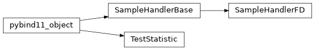

Sample Handler
This module deals with sampling from the posterior density function of your particular experimental model at different points, given your data.
In order to do this, you will generally need to create a SampleHandler object derived from pyMaCh3._pyMaCh3.fitter.SampleHandlerFD
for each sample of events for your experiment. For some more details on this you can see the wiki page on this.
The code examples there are written using c++ however the general ideas are the same.
Happy sampling!
pyMaCh3._pyMaCh3.samples Module
This is a Python binding of MaCh3s C++ based samples library.
Classes
Members: |
Class Inheritance Diagram
